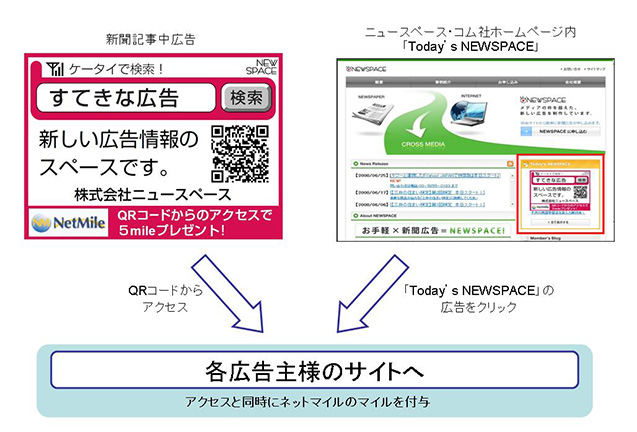

プレスリリース
2008年8月1日
株式会社ネットマイル
ネットマイル社、ニュースペース・コム社と広告事業で提携
～ アクセスすればマイルが貯まる、新しい新聞広告が登場 ～
インターネット上の共通ポイントプログラムを運営する株式会社ネットマイル（本社：東京都千代田区、代表取締役社長：山本雅、以下、ネットマイル社）は、株式会社ニュースペース・コム（本社：東京都千代田区、代表取締役社長：岳中純郎、以下、ニュースペース・コム社）と広告事業で提携し、2008年8月1日よりアクセスすればマイルが貯まる新しい広告サービスを開始いたします。
この新サービスは、産経新聞社の発行する新聞紙面に掲載されているQRコード付きのNEWSPACE広告から、広告主のウェブサイトにアクセスをするごとに、利用者に対してネットマイルのマイルが付与されるサービスになっております。（※1）
また、ニュースペース・コム社のホームページ上にある、当日の新聞紙面に掲載されたNEWSPACE広告がランダムに表示される「Today's NEWSPACE」からのアクセスに対しても、同様にマイルが付与されます。（※2）
ネットマイル社では、今回の取組みで新聞購読者にインターネットポイントの認知を進めると同時に、新たなユーザー層の会員登録促進を図ります。
※1 マイルが貯まるNEWSPACE広告の新聞紙面掲載は、8月11日以降の予定です。
※2 「Today's NEWSPACE」からのアクセスについては、表示される広告のうち1サイトに限り、マイルが付与されます。
【株式会社ニュースペース・コムについて】
| 社名 | 株式会社ニュースペース・コム |
|---|---|
| 代表取締役 | 岳中 純郎 |
| 所在地 | 〒100-0004 東京都千代田区大手町1-7-2 産経新聞社 11F |
| 資本金 | 2億1550万円 |
| 設立 | 2007年3月29日 |
| 事業内容 | 広告、宣伝に関する企画、制作及び広告仲介・代理業 インターネット広告の広告代理業・広告プランニング インターネットを利用した広告配信サービス及び情報提供仲介サービス |
| 株主 | 株式会社 産業経済新聞社 株式会社 日本工業新聞社 ( Fuji Sankei Business i ) コロムビアミュージックエンタテインメント株式会社 株式会社 ズノー |
【株式会社ネットマイルについて】
http://www.netmile.co.jp/
2000年11月設立。三井物産株式会社の連結子会社で、インターネット上の共通ポイントプログラム「ネットマイル」を運営。同社のIT事業戦略の一端を担う。
「ネットマイル」は、2001年4月にサービスを開始。累計加盟サイト数約1,000サイト、累計登録会員数約389万人（2008年6月末現在）の規模は、日本最大級。2007年12月、インターネット業界最大規模のオンラインイベントである『 Web of the Year 2007 』ポイント部門で第1位に選ばれる。
| 社名 | 株式会社ネットマイル |
|---|---|
| 代表取締役 | 山本 雅 |
| 所在地 | 〒101-0054 東京都千代田区神田錦町3-26 一ツ橋 SIビル 9F |
| 資本金 | 396百万円 |
| 設立 | 2000年11月7日 |
| 事業内容 | 1 ： インターネット市場におけるユニバーサルポイントプログラム「ネットマイル」のサービスを運営 2 ： ネットマイル会員を活用した、大規模ネットリサーチの運営 |
| 出資企業 | 三井物産株式会社、トランスコスモス株式会社 他 |
※ QRコードは、株式会社デンソーウェーブの商標登録です。
＜当リリースに関する報道関係者お問い合わせ先＞
株式会社ネットマイル 広報担当 ： 江澤・村井
Email ： 
TEL ：